Auf einer Menge  sei jedem Paar von Elementen 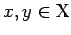 eine reelle Zahl 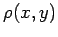 zugeordnet, so daß für beliebige Elemente 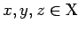 die folgenden Eigenschaften, die Axiome des metrischen Raums, erfüllt sind:
sei jedem Paar von Elementen 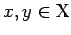 eine reelle Zahl 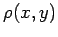 zugeordnet, so daß für beliebige Elemente 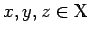 die folgenden Eigenschaften, die Axiome des metrischen Raums, erfüllt sind:
| 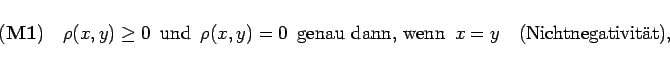 | (12.40) |
| 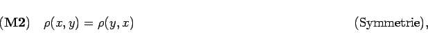 | (12.41) |
| 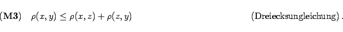 | (12.42) |
Eine Funktion 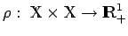 mit den Eigenschaften 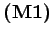 bis 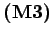 heißt Metrik, Distanz oder Abstand auf der Menge  , und das Paar
, und das Paar  heißt metrischer Raum. Jede Teilmenge
heißt metrischer Raum. Jede Teilmenge  eines metrischen Raumes
eines metrischen Raumes  kann auf natürliche Weise in einen (selbständigen) metrischen Raum verwandelt werden, indem man die Metrik
kann auf natürliche Weise in einen (selbständigen) metrischen Raum verwandelt werden, indem man die Metrik  des Raumes
des Raumes  auf die Menge
auf die Menge  einschränkt, d.h. nur auf der Menge 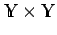 betrachtet. Der Raum 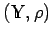 heißt Teilraum des metrischen Raumes
einschränkt, d.h. nur auf der Menge 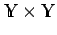 betrachtet. Der Raum 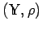 heißt Teilraum des metrischen Raumes  .
.
| Beispiel A |
|
Die Mengen für zwei Punkte 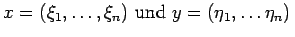, sind metrische Räume. |
| Beispiel B |
|
Die Funktion definiert für die Vektoren 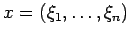 und 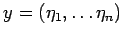 einen metrischen Raum in für die Vektoren 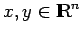 oder () definiert eine Metrik in |
| Beispiel D |
|
In der Menge |
| Beispiel E |
|
In der Menge |
| Beispiel F | ||
|
In der Menge 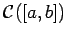 betrachtet man die Metrik
|
| Beispiel G | ||
|
In der Menge 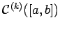 definiert man als Metrik:
|
| Beispiel H | ||
|
In der Menge 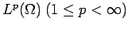 aller Äquivalenzklassen von fast überall auf einem beschränkten Gebiet 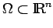 definierten LEBESGUE-meßbaren, zur p-ten Potenz summierbaren Funktionen (s. LEBESGUE-Integral) ist eine Metrik definiert durch
|